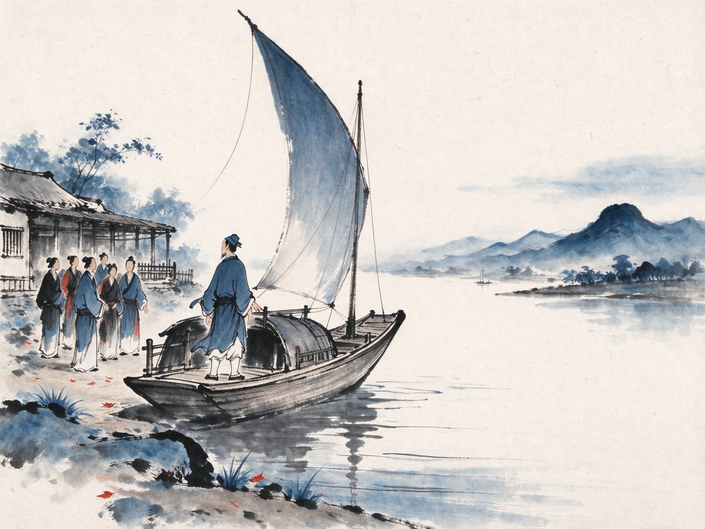

陆游 · 1170-1172
入蜀
大散关

事件·入蜀记·启程
乾道五年冬，你得到一纸任命：通判夔州。夔州在三峡西口，离山阴四千里。
主战获罪的闲废之身，四十六岁，得到的是这样一份远差。你不嫌弃它远——罢居数年，你答应得干脆。
乾道六年闰五月，你携家发舟。此行的山川日记，你逐日写下，后来成书，就叫《入蜀记》。江南段运河、北固山、采石矶——半壁江山的水路，一程一程，都在你笔下。
五个月后，舟抵夔州。
注
- 《入蜀记》为逐日日记体，是中国最早的江行日记名作之一；本篇行程均据其逐日所记
事件·入蜀记·三峡
十月，舟入三峡。
巫山十二峰、瞿塘滟滪堆，前人写了一千年的险，你一程一程亲身过。船上无事，你把两岸的山名、滩名、峡中的风物人情，一条条记进日记——连猿声、霜叶、滩工的号子都不放过。
杜甫四百年前走过的这条路，你正一段一段重走。夔州的鱼复、白帝的城、八阵图的石——那些他写过的，你都到了眼前。
十月二十七日前后，舟抵夔州任所。西行四千里，从江南水乡到峡口孤城——你人生真正的转折，还在这座城的西面，等你。
注
- 杜甫大历年间寓夔近两年，作诗四百余首；陆游此行于日记中多处记杜甫旧迹
- 「入蜀记」行程日期均从原书逐日记，此处取其大略
南郑
夔州通判任满，本该沿例候官。乾道八年春，一纸辟书改变了一切：宣抚使王炎，辟你为干办公事兼检法官，赴南郑军前。
南郑是抗金前线。大散关以北，就是敌境。
四十八岁的诗人，第一次真正置身行伍。你巡边、看地形、草军书，也随军纵猎——雪天在山林间围虎，戈矛起处，虎应声而毙。这些事你后来写了一辈子：「南郑从戎」四个字，是你平生最自得的经历。
军旅生活八个月，胜过纸上谈兵四十年。你忽然觉得，恢复这件事，不再只是书楼里的志向了。
注
- 王炎时任四川宣抚使，幕府驻南郑；陆游此期为幕府中唯一的江南文士之列，军务实任
- 刺虎事出陆游自述诗，散见诸篇，细节以自述为据
- 大散关：宋金交界要隘，在南郑以北——铁马秋风大散关的记忆即成于此期
七月十六日晚，你登上南郑城内的高兴亭。亭上北望，晴空之下，终南山的轮廓清清楚楚——山那边，是长安。沦陷四十余年的长安。角声、烽火、悲歌、酹酒。同行的人都在望，只有你把这一晚写了下来——灞桥的柳、曲江的馆，都在等——
秋波媚·七月十六日晚登高兴亭望长安南山
秋到边城角声哀，烽火照高台。
悲歌击筑，凭高酹酒，此兴悠哉。
多情谁似南山月，特地暮云开。
灞桥烟柳，曲江池馆，应待人来。
注
- 长安于建炎四年入金人之手，至此四十余年——「应待人来」，沦陷的长安在等宋军
- 高兴亭在南郑子城西北；南山即终南山，晴日可望
- 此阕与《书愤》「楼船夜雪」「铁马秋风」同为南郑记忆的两大出口
幕府散
十月，诏书到：召王炎赴临安。
名为回朝，实为夺柄——朝廷无意经略中原，主战的宣抚使不能留在前线。王炎东去，幕府遣散，南郑的军营一夜空了大半。
恢复的机会，就在眼前悬了八个月，然后被一纸诏书收回。你此生离「打回去」最近的一次，到此为止。
你被改除成都府路安抚司参议官，携家西行。过仙人关，秦岭的驿道在冬雨里走了一个多月——从此，你诗里再没有「从戎」，只剩「忆昔」。
此身合是诗人未——这个句子，在路上等着你。
注
- 王炎还朝后罢枢密使，宣抚司裁撤；南郑恢复筹划尽废
- 本页深色底：南郑之兴骤然而止，八个月的心血付于一纸诏书